ドッキング可能なツールバーボタンに加え、Originには様々な編集操作を行うためのミニツールバーがあります。ツールバーについての詳細は、このガイドのOriginのインターフェースを参照してください。ツールバーの完全なリストについては、Originヘルプファイルを参照してください。
Originのツールバーおよびボタングループのボタンのリストです。ツールバーはデフォルトの構成で表示されます。いくつかのボタンはデフォルトのツールバーには表示されていません。これは、そのボタンが非推奨だったり、他のツールバーと重複していたり、単にあまり使われないボタンであるためです。
ツールバーにボタンを追加または削除するには
ツールバーボタンには下向きの矢印ボタンがついているものもあります。このようなボタンをそのままクリックすると、表示されたアイコンに紐づけられた機能が実行されます。ボタン横の矢印をクリックすると、他のツールを選択できます。このボタンには最近使用したツールが表示されます。
操作対象のオブジェクトがアクティブでない場合、ツールバーのボタンはアクセス不能（グレーアウト表示）になります。 例えば、「3D回転操作」ツールバーは、3Dグラフがアクティブな時のみ利用できます。
ドッキング可能なツールバーボタンに加え、Originには様々な編集操作を行うためのミニツールバーがあります。ツールバーについての詳細は、このガイドのOriginのインターフェースを参照してください。ツールバーの完全なリストについては、Originヘルプファイルを参照してください。 |
| ボタン | 説明 | ホットキー | ボタン | 説明 | ホットキー |
|---|---|---|---|---|---|
| 新規プロジェクト | 新規フォルダ | ||||
| 新規ワークブック | 新規グラフウィンドウ | ||||
| 新しい行列ウィンドウ | 2D関数グラフ作成 | ||||
| 2Dパラメトリック関数グラフ作成 | 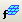 | 3D関数グラフ作成 | |||
| 3Dパラメトリック関数グラフ作成 | 新レイアウトウィンドウ | ||||
| 新規ノートウィンドウ | イメージのデジタイズ | ||||
| 新規画像 | 開く | Ctrl + O | |||
| クラウドから開く | プロジェクト保存 | Ctrl + S | |||
| 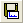 | テンプレートの保存 | 再計算モード自動/最新または手動/保留 | |||
| 自動更新/再計算を一時停止 | 
|
パーセントでの拡大・縮小 | |||
| 印刷 | Ctrl + P | グラフのスライドショー | |||
| PowerPointにグラフを送る | 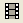 | ビデオビルダを開く | |||
| リフレッシュ | F5 | 複製: | |||
| カスタムルーチン | プロジェクトエクスプローラ | Alt + 1 | |||
| オブジェクトマネージャ | Alt + 8 | 結果ログ | Alt + 2 | ||
| 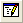 | コマンドウィンドウ | Alt + 3 | 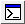 | スクリプトウィンドウ | Shift + Alt + 3 |
| コードビルダ | Alt + 4 | 列を追加 |
プロジェクトエクスプローラのフォルダとフォルダの内容を操作するための新しいツールバーフォルダとウィンドウが追加されました。複数のプロジェクトフォルダを操作する場合や、別々のフォルダにあるウィンドウを比較する際に役立ちます。
Originの初回起動時に、このツールバーがフローティング状態でOriginのワークスペースに追加表示されることがあります。その場合、タイトルバー部分をドラッグしてツールバー領域の空いている部分に配置したり、表示：ツールバーを選択して再初期化ボタンをクリックすることでツールバーの構成をリセットすることができます。
| ボタン | 説明 | ホットキー | ボタン | 説明 | ホットキー |
|---|---|---|---|---|---|
| 前のフォルダ | 次のフォルダ | ||||
| Seesaw（シーソー） | Ctrl + Alt + X | シーソー用にアクティブウィンドウのショートカットを追加 | Ctrl + Shift + F7 | ||
| 現フォルダからショートカットを追加 | 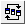 | ウィンドウを整列（前回どおり） | |||
| アクティブウィンドウを固定 |
| ボタン | 説明 | ホットキー | ボタン | 説明 | ホットキー |
|---|---|---|---|---|---|
| インポートウィザード | 単一ASCIIのインポート | ||||
| 複数ASCIIのインポート | Excelのインポート | ||||
| 即時再インポート | Ctrl + 4 | 再インポート | |||
| 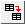 | クローンインポート | バッチ処理 | |||
| Web上のデータに接続 | 複数ファイルに接続 | ||||
| 接続された全てのデータをインポート |
| ボタン | 説明 | ホットキー | ボタン | 説明 | ホットキー |
|---|---|---|---|---|---|
| 切り取り | Ctrl+X | コピー | Ctrl + C | ||
| 貼り付け | Ctrl + V | 元に戻す | Ctrl + Z | ||
| やり直し | Ctrl+Y |
| ボタン | 説明 | ホットキー | ボタン | 説明 | ホットキー |
|---|---|---|---|---|---|
| アンチエイリアスを有効化/無効化 | 再スケール | Ctrl + R | |||
| X軸の再スケール | Y軸の再スケール | ||||
| XY軸の再スケール | Z軸の再スケール | ||||
| X軸とY軸の交換 | スピードモードの有効/無効化 | ||||
| レイヤへ抽出 | 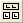 | グラフへ抽出 | |||
| 統合 | 新しい列/シート/ブックで複製... | ||||
| 下X軸左Y軸レイヤの追加 | 上X軸レイヤの追加 | ||||
| 右Y軸レイヤの追加 | 上X軸右Y軸レイヤの追加 | ||||
| インセットグラフの追加 | データ込みのインセットグラフの追加 | ||||
| ズームイン | ズームアウト | ||||
| ページ全体 |
一般的なグラフタイプのみツールバーボタンを用意しています。作図メニューで全てのプロットタイプを確認できます。 |
| ボタン | 説明 | ボタン | 説明 |
|---|---|---|---|
| 折れ線 | 水平階段 | ||
| 垂直階段 | スプライン接続 | ||
| 散布図 | グループ化散布図 - インデックスデータ | ||
| 散布図（軸中心） | 列散布図 | ||
| Yエラー | XYエラーバー | ||
| 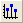 | 垂直ドロップライン | バブル | |
| カラーマップ | カラーマップバブル | ||
| 線+シンボル図 | 線系グラフ | ||
| 2点線分 | 3点線分 | ||
| 行データプロット | 縦棒 | ||
| 縦棒+ラベル | グループ縦棒グラフ - インデックスデータ | ||
| 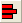 | 横棒 | 積み上げ縦棒 | |
| 積み上げ横棒 | 100% 積み上げ縦棒グラフ | ||
| 100% 積み上げ横棒グラフ | 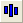 | 浮動縦棒 | |
| 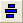 | 浮動横棒 | 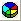 | 3Dカラー円グラフ |
| 2D白黒円グラフ | 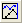 | 二重Y軸 | |
| 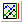 | 3Ys Y-YY | 3Ys Y-Y-Y | |
| 4Ys Y-YYY | 4Ys YY-YY | ||
| 複数Y軸 | Yオフセット付き積上げ折れ線 | ||
| カラーマップ線系グラフ | ウォータフォール | ||
| 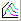 | ウォータフォールY：カラーマッピング | ウォータフォールZ：カラーマッピング | |
| 3Dウォータフォール | 3DウォータフォールY：カラーマッピング | ||
| 3DウォータフォールZ：カラーマッピング | 垂直2区分 | ||
| 水平2区分 | 4区分 | ||
| 9区分 | 積み上げ | ||
| 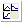 | ラベルから複数パネルを一括作成 | トレリスプロット | |
| 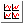 | クラスタープロット | ボックスチャート | |
| ボックス付きバイオリン | グループ化ボックスチャート-インデックスデータ | ||
| グループ化ボックスチャート-素データ | 区間プロット | ||
| ヒストグラム | ヒストグラム+確率 | ||
| 複数区分ヒストグラム | ヒストグラム投影 | ||
| ボックスチャート投影 | 分布+ラグ | ||
| 2Dカーネル密度 | QCチャート(X-bar R) | ||
| パレート図-ビン化データ | パレート図-素データ | ||
| 散布図行列 | 確率プロット | ||
| Q-Qプロット | 平行座標プロット | ||
| 面積 | 積み上げ面積 | ||
| 色付き面積 | ズーム | ||
| θ(X) r(Y)極座標グラフ | r(X) θ(Y)極座標グラフ | ||
| ウィンドローズ-ビン化データ | 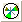 | ウィンドローズ-素データ | |
| 三点グラフ | 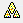 | トリリニアダイアグラム | |
| スミスチャート | レーダー | ||
| XYAM型ベクトル | XYXY型ベクトル | ||
| 株価チャート | ローソク足チャート | ||
| 株価チャート：OHLC | 株価チャート：OHLC-出来高 | ||
| 株価折れ線チャート | 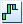 | 滝グラフ | |
| テンプレートライブラリ |
| ボタン | 説明 | ホットキー | ボタン | 説明 | ホットキー |
|---|---|---|---|---|---|
| カラースケールを追加 | バブルスケールを追加 | ||||
| ボックススケール追加 | 凡例を再構成 | Ctrl+L | |||
| 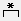 | アスタリスクブラケットの追加 | 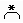 | 丸括弧のアスタリスクブラケットの追加 | ||
| 波括弧のアスタリスクブラケットの追加 | XYスケールを追加 | ||||
| 日時スタンプ | プロジェクトパス | ||||
| 新規リンクテーブル |
| ボタン | 説明 | ボタン | 説明 |
|---|---|---|---|
| 3D散布図 | 3D トラジェクトリ | ||
| 3D散布図 + Zエラーバー | 3DベクトルXYZ XYZ | ||
| 3DベクトルXYZ dXdYdZ | 3D三角錐 | ||
| 3D棒グラフ | 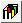 | 3D積み上げ棒グラフ | |
| 3D100% 積み上げ棒グラフ | XYY3D棒グラフ | ||
| 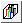 | XYY3D積み上げ棒グラフ | XYY3D100% 積み上げ棒グラフ | |
| 3Dリボン | 3Dウォールグラフ | ||
| 3Dウォータフォール | 3DウォータフォールY：カラーマッピング | ||
| 3DウォータフォールZ：カラーマッピング | 3D色付き曲面図 | ||
| 複合色付き曲面図 | 等間隔X曲面図 | ||
| 等間隔Y曲面図 | 3Dカラーマップ曲面 | ||
| 複合カラーマップ曲面 | エラーバー付き3D色付き曲面図 | ||
| エラーバー付き3Dカラーマップ曲面図 | 3Dワイヤーフレーム | ||
| 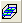 | 3Dワイヤー曲面 | 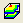 | 投影付きのカラーマップ曲面図 |
| 3Dカラーマップ三点曲面 | 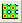 | 等高線図 - 色付き | |
| 等高線-線+ラベル | グレースケール等高線図 | ||
| 等高線プロファイル | θ(X) r(Y)極座標等高線 | ||
| r(X) θ(Y)極座標等高線 | 三点等高線図 | ||
| イメージプロット | イメージプロファイル | ||
| ヒートマップ | ラベル付きヒートマップ |
| ボタン | 説明 | ボタン | 説明 |
|---|---|---|---|
| 反時計回りに回転 | 時計回りに回転 | ||
| 左に傾斜 | 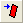 | 右に傾斜 | |
| 下に傾斜 | 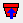 | 上に傾斜 | |
| 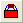 | 視野拡大 | 視野縮小 | |
| フレームに合わせる | 回転のリセット | ||
| リセット | 回転 | ||
| 回転角 |
| ボタン | 説明 | ホットキー | ボタン | 説明 | ホットキー |
|---|---|---|---|---|---|
| 列の統計 | 行の統計 | ||||
| ソート | 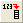 | 列値の設定 | Ctrl + Q | ||
| 全ての列値の設定 | Ctrl + F5 | 行番号値を列に設定 | |||
| 一様乱数を列に設定 | 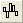 | 正規乱数を列に設定 | |||
| データフィルタを追加または削除 | データフィルタを有効にする/無効にする | ||||
| データフィルタの再適用 |
| ボタン | 説明 | ボタン | 説明 |
|---|---|---|---|
| X列 | 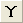 | Y列 | |
| Z列 | Yエラーバー | ||
| ラベル列 | 無属性 | ||
| グループ列 | サブジェクト列 | ||
| 始めへ移動 | 左に移動 | ||
| 右に移動 | 終わりへ移動 | ||
| 列の交換 | スパークラインの追加 |
このツールバーはデフォルトで非表示になっています。表示するには、表示：ツールバーメニューを選択します。

| ボタン | 説明 | ボタン | 説明 |
|---|---|---|---|
| グラフ追加 | ワークシート追加 |
| ボタン | 説明 | ボタン | 説明 |
|---|---|---|---|
| 範囲のマスク | 範囲のマスク取り外し | ||
| マスクカラー変更 | マスクポイントの表示/非表示 | ||
| マスクの逆転 | マスク操作の利用可/不可 |
| ボタン | 説明 | ホットキー | ボタン | 説明 | ホットキー |
|---|---|---|---|---|---|
| ポインタ | スケールイン | ||||
| スケールアウト | スクリーンリーダ | ||||
| データハイライター | データリーダ | ||||
| データカーソル | データセレクタ | ||||
| アクティブプロットから選択 | 全プロットから選択 | ||||
| 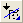 | 現プロットを対象にマスクを付加する | 全プロットを対象にマスクを追加する | |||
| 現プロットを対象にマスクを外す | 全プロットを対象にマスクを外す | ||||
| マウスで作図 | テキストツール | ||||
| データラベル | 距離計測ツール | ||||
| 角度計測ツール | 矢印ツール | ||||
| 曲線矢印ツール | 直線ツール | ||||
| 折れ線ツール | 曲線ツール | ||||
| 自由曲線ツール | 四角形ツール | ||||
| 円ツール | 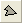 | 多角形ツール | |||
| 自由閉曲線ツール | ズームとパンツール | "A"キーを押す | |||
| 数式を挿入 | Wordオブジェクトを挿入 | ||||
| Excelオブジェクトを挿入 | オブジェクトを挿入 | ||||
| グラフ挿入 | ワークシート挿入 | ||||
| 再スケールツール | "Z"キー：ズーム、"X"キー：パン | 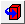 | 回転ツール | "R"キーを押す |
| ボタン | 説明 | ボタン | 説明 |
|---|---|---|---|
| 左 | 右 | ||
| 上 | 下 | ||
| 垂直 | 水平 | ||
| 同じ幅 | 同じ高さ | ||
| グループ化 | 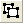 | 非グループ化 | |
| 選択されたレイヤ/描画オブジェクトを垂直方向に 等間隔に配置する |
選択されたレイヤ/描画オブジェクトを水平方向に 等間隔に配置する | ||
| 最前面へ移す | 最背面へ移す | ||
| 前面へ | 背面へ | ||
| 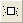 | プロット前面に移す | プロット後部に移す |
このツールバーはデフォルトで非表示になっています。表示するには、表示：ツールバーメニューを選択します。
| ボタン | 説明 | ボタン | 説明 |
|---|---|---|---|
| 水平方向に揃える | 垂直方向に揃える | ||
| 広い矢先 | 狭い矢先 | ||
| 長い矢先 | 短い矢先 |
| ボタン | 説明 | ホットキー | ボタン | 説明 | ホットキー |
|---|---|---|---|---|---|
| 塗り色 | 線/境界色 | ||||
| ライティング制御ダイアログ | パレット | ||||
| 線/境界のスタイル | 
|
線/境界の太さ | |||

|
塗りつぶしパターン | 塗りつぶしパターンの幅 | |||
| パターンの色 | 境界のクリア | ||||
| 左境界 | 上境界 | ||||
| 右境界 | 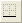 | 下境界 | |||
| フレーム境界 | 水平境界内 | ||||
| 垂直境界内 | 水平垂直境界内 | ||||
| すべての水平境界内 | すべての垂直境界内 | ||||
| 全境界 | セルの統合 | Ctrl + R |

| ボタン | 説明 |
|---|---|
| 自動更新/再計算を一時停止 |
| ボタン | 説明 | ボタン | 説明 |
|---|---|---|---|
| SQLエディタを開く | 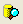 | クエリビルダを開く | |
| ODQファイルのロード | インポートプレビュー | ||
| データのインポート | SQLの削除 |
| ボタン | 説明 | ホットキー | ボタン | 説明 | ホットキー |
|---|---|---|---|---|---|
| データマーカーの追加 | Ctrl+Alt+M | データマーカーの消去 | Ctrl+Alt+N | ||
| 解析マーカーのサイズ変更 | 解析マーカーの表示/非表示 | ||||
| 錠前アイコンの位置変更 |